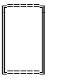

ASK YOUR QUESTION. BE SPECIFIC.
WELCOME! THIS IS A TOOL FOR DRAWING 1 TO 5 RANDOM CARDS FROM THE TENSORITHM TAROT DECK, AN AI-GENERATED TAROT SYSTEM BROUGHT TO YOU BY CHATGPT AND MIDJOURNEY. SEE THE FULL DECK AND READ MORE ABOUT THE PROJECT HERE, OR GO TO THE GITHUB REPO HERE IF YOU'RE INTERESTED IN CONTRIBUTING TO THIS PROJECT.
THE TOOL WAS DEVELOPED BY A NON-CODER (THAT'D BE ME), HELPED ALONG BY CHATGPT AND CODE.CHAT. AS A RESULT, IT'S SOMEWHAT PRIMITIVE. WE HAVEN'T (YET) FIGURED OUT HOW TO CREATE VISUAL SPREADS, BUT YOU CAN USE THE LINEAR LAYOUT IN MANY DIFFERENT WAYS. SOME EXAMPLES:

SINGLE CARD: INSIGHT INTO YOUR CURRENT SITUATION OR QUESTION
TWO CARDS: PRESENT AND FUTURE OR TWO POTENTIAL PATHS FROM WHICH TO CHOOSE
THREE CARDS: PAST, PRESENT, AND FUTURE. INSIGHT INTO WHAT LED TO THE PRESENT SITUATION, AND POSSIBLE NEXT STEPS
FOUR CARDS: PAST, PRESENT, AND TWO POTENTIAL FUTURES. CHOOSE YOUR OWN ADVENTURE
MODIFIED CELTIC CROSS: PRESENT INFLUENCES, CHALLENGES, GUIDANCE, AND POTENTIAL OUTCOMES
THERE ARE NO WRONG APPROACHES TO THE TAROT AS LONG AS YOUR QUESTION IS CLEAR, AND YOU ARE OPEN TO ACCEPTING THE ANSWERS PRESENTED